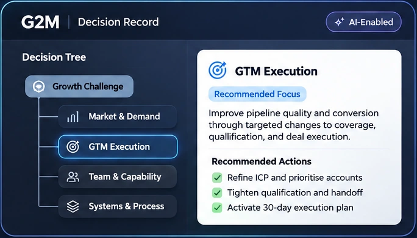

01 / TARGET01 / 05
Are we focused on the right segments and buyers?
Poor market focus or buyer fit may not become obvious until opportunities begin to stall. Test whether the right demand is entering the system.
More sellers, activity, or technology may help. First, understand what is actually holding growth back.
Explore the pipeline ↓The signals are there. What they mean—and where the real constraint begins—isn't always obvious.
See what's beneath ↗Activity is visible. The reason behind each outcome may not be.
Poor market focus or buyer fit may not become obvious until opportunities begin to stall. Test whether the right demand is entering the system.
Signals move left to right. Commercial activity appears healthy on the surface.
02 / REFRAME THE QUESTION
More sellers. More SDRs. More GTM systems. More of your time. Each adds investment or complexity. None guarantees the result.
Move the sliders. See the annual investment. Then consider what must actually improve to make it worthwhile.
First-year AE investment
Illustrative planning estimate, not a forecast of revenue.
All four investment choices together, using your current slider settings.
Before adding headcount, programs, systems or executive hours, understand whether the constraint is demand, relevance, execution, ownership—or the economics of the model itself.
Illustrative estimates only. The calculator combines cash commitments and an estimated value of leadership time. It does not measure wasted expenditure, profits, or return on investment.
G2M combines experienced commercial leadership, an AI-enabled decision tree, and a digital decision record to turn complexity into clear choices, aligned action, and a path to growth.

Pinpoints likely root causes and high-impact options.
Captures the rationale, decisions, actions, and results in one place.
Turns decisions into action, tracks progress, and adapts as results come in.
That’s why companies work with G2M — through one of three practical, outcome-focused engagements.
You may need experienced commercial leadership, a connected GTM operating foundation, or both. Choose the starting point that fits your business. Each approach is guided by Velocity™.
Independent starting points—not packages or mandatory upgrades. The G2M operating system is not required for commercial leadership.
Let's examine what's happening, what might sit underneath it, and what change would actually make a difference. G2M Labs starts with the commercial condition—not a predetermined solution.
Contact email is provisional—replace with your verified address or HighLevel form endpoint before launch.